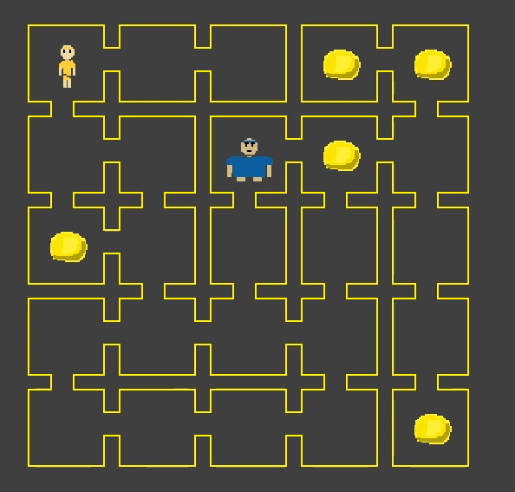

There is a particular way of helping people with conflict other that the more known methods like therapy or counselling. Mediation is an
alterantive but effective way to help people come together and see each other eye to eye. There may even be better reconcilliation compared to
therapy and counselling. That is why I want to try to make a website that can help people sign up and meet with Mediators faster than ever before.
An example of this website would be Family Solutions Conselling. They offer a great chance
at meeting Mediators through their online platform.
Mediation Counselling Online
This is a videogame I made in 2024, it is based off a popular game back when Computer Science is new and booming. It's a fun twist of the regular tic-tac-toe and
is fun to play with both friends and by yourself. You can learn more about my projects in this tab over here. Feel free to check it out.
Online Therapy Session
The different with mediation and therapy comes in different forms and shapes, but there is no doubt that both help with mental health in some aspect. Online therapy is for those
that would rather keep a low profile but still wants to receive professional mental health. I think it is imporatnt that we embrance this, and thats why I would like to create a page where
people from across the globe get access to licensed therapists without the problems of transportation or anything else. A great example of a website as such is this
website here. They are able to deal with patients and give you access to licensed therapists the whole way.

Retro Game Emulator
A game developed back in the 80s can still have a chance to be cool and popular in the present day. We can emulate and play these games on any device
and play them with the lastest technology, making it extremely smooth and responsive. You can check this emulator project out right here!
HIVA Visualizer
This is an idea that I had when I was taking a peacebuilding class in my University. A technique or an activity that is effective is by playing a game of connect4 but
with a twist. This involves being able to tell what feelings and thoughts one might have as they put each token of connect4 down onto the board. It's a simple but effective game
that can be played both using a board and now with an tablet or a mobile device (even a computer). You can check this project out right here.
Note Taking Progress Widget
I draw inspiration of note taking and a tracker because the app "Notion" has helped me be ahead of things in my University life.
Thus, I want to create an app that can rival Notion and maybe make it more accessable and better for myself as a personal project. If this is something that
you might be interested in, please do contact me here. I haven't decided to start it so if we do start it together it'll be from scratch!